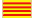
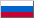
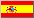

- Non-English Tipitaka
- Pali
- Printed books
- Online books
- Audio
Note: I can't vouch for the quality of all the materials offered on the external sites listed here. Some are more useful than others. Use your own best judgment. To report errors or to recommend sites to add to this list, please contact me.
Here is a sampling of web sites that offer translations of Pali Tipitaka texts into languages other than English. This is by no means an exhaustive list. Rather, I have selected a few representative sites that offer either a good selection of texts or a rich set of web-links to other sites in that language. Most of these sites offer texts (suttas, essays, etc.) that also appear (in English) on Access to Insight.
-  Catalàn
- Budisme en Català (Albert Biayna Gea) offers a collection of suttas in Catalàn
- Chinese (Traditional & Simplified)
- The Wings to Awakening: Readings in Theravadan Buddhism in Chinese Translation (Lau, Sinh-Lam) is a Chinese website (both in Simplified and Traditional Fonts) dedicated to the study and practice of Theravada Buddhist Teachings. It is created and maintained by two Theravadan Buddhist practitioners and at present, all the materials are selected, translated, and organized by them, of which over the years they have found particularly useful in their own practice. Includes translations of several Pali suttas.
- Dutch
- Sleutel tot Inzicht ("Key to Insight") (Peter van Loosbroek)
- Suttas.net (Dhammajoti)
- French
- Accès au Canon Pali (Michel Proulx) mirrors the sutta collection of Access to Insight in English, and offers a growing number of French translations of suttas and other texts.
- German
- Anguttara Nikaya offers German translations of sutta translations by Thanissaro Bhikkhu.
- Dhamma-dana offers German translations of articles by Ajaan Chah, Ajaan Suwat, Thanissaro Bhikkhu, Bhikkhu Bodhi, and Ayya Khema.
- Tipitaka, der Pali Kanon des Theravada-Buddhismus offers a nearly complete collection of German translations from all five Nikayas, plus extensive excerpts from the Vinaya and Abhidhamma Pitakas.
- Hungarian
- A Buddha Ujja ("The Finger of the Buddha") (Gambhiro Bhikkhu) offers a large collection of Pali suttas in Hungarian, articles and videos by and about major teachers from the Thai forest traditions, and links to Hungarian Buddhist communities and websites.
- Italian
- Canone Pali: le parole del Buddha (Enzo Alfano)
- Il Canone Pali (Michel Proulx)
- Norwegian
- Dhamma-biblioteket Fra buddhismens grunntekster (Kåre A. Lie)
- Polish
- Sasana.pl (Piotr Jagodziński)
- Portuguese
- Acesso ao Insight: Leituras do Budismo Theravada (Michael Beisert) offers an extensive collection of Pali suttas, articles by major teachers from the Thai forest traditions, and much more — all translated into Portuguese.
-  Russian
- Koleso Dhammy ("Wheel of Dhamma")
- Theravada.ru
- Sinhala
- Aathaapi: Pure Theravada Buddhism Exposed according to The Original Pali Canon (Saminda Ranasinghe) offers the complete Buddha Jayanthi Tipitaka in Sinhalese script (Pali and translation) in PDF format.
- The Tipitaka (Russia) offers Sinhala translations of large portions of the Vinaya and Sutta Pitakas.
-  Spanish
- Bosque Theravada offers Spanish language translations of suttas and articles by teachers from the Thai forest traditions.
- Centro Mexicano del Buddhismo Theravada A.C. offers an extensive collection of Spanish language texts.
- TextosBudistas
- Swedish
- Suttor (Kerstin Jönhagen) offers Swedish translations of about 30 suttas. The site's home page has links to other Swedish Buddhist resources.
- Thai
- Thai Tipitaka (Bhodhiyana Meditation Center) offers the Thai Tipitaka (in Thai script), plus translations of selected suttas in other languages.
- Vietnamese
- BuddaSasana: Vietnamese Buddhist Page (Binh Anson) offers the entire Vietnamese translation of the Tipitaka and is regularly revised and corrected for any errors. Also distributes a free CD that includes both the BuddhaSasana website (in Vietnamese; updated monthly) and Access to Insight (in English; updated every six months).
- Trang Văn Học Pāli (Pali Tripitaka & Glossary)
- Earth
- A good all-around source for international links to Dhamma sites is the Wikipedia. In particular, look for the box titled "In other languages" in the lower left corner of these pages: Buddhism, Theravada, and Tipitaka.
Acknowledgments
The flag icons are copyright © Philippe Verdy, and appear here courtesy of SETI@home.
The poitically-neutral Chinese language icon (which reads "Chinese language" in both Traditional and Simplified Chinese) was contributed by an ATI reader.
- Non-English Tipitaka
- Pali
- Printed books
- Online books
- Audio